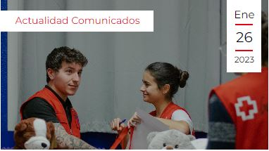
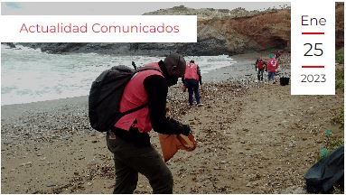

Noticias

El mundo no está preparado para la próxima pandemia, alerta Cruz Roja
Madrid, 30 de enero de 2023. Ningún terremoto, sequía o huracán en la historia registrada ha cobrado más vidas que la pandemia de la COVID-19, según la red de respuesta a desastres más grande del mundo, la Federación Internacional de Sociedades de la Cruz Roja y de la Media Luna Roja (FICR).

Leer más
Cruz Roja Juventud entrega 42.000 juguetes en la campaña de ‘El jugue [...]
En los últimos seis meses de 2022 se han recogido y entregado los juegos y juguetes a 36.500 niños y niñas, con especial énfasis en las fiestas de final de año
Leer más
Cruz Roja y LIBERA recogen y analizan más de 15 toneladas de ‘basura [...]
Desde hace siete años Cruz Roja y el Proyecto LIBERA llevan a cabo un programa para cuantificar y clasificar los residuos presentes en las playas, ríos, montes y mares, con el fin de evitar su deterioro e impulsar la conciencia medioambiental acerca de la necesidad de cuidar y preservar la naturaleza.
